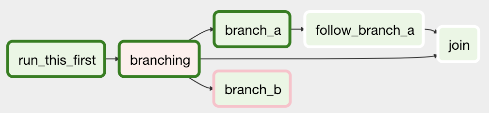
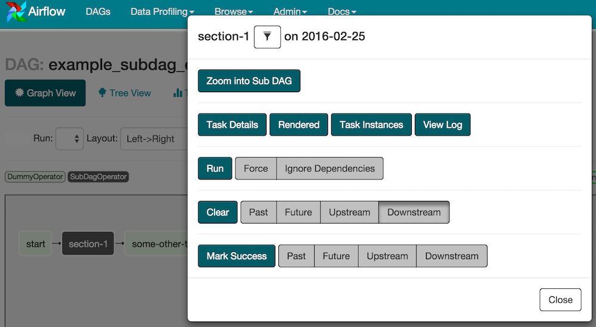

개념¶
에어플로우 플랫폼은 워크플로우를 설명하고, 실행하고, 모니터링할 수 있는 도구이다.
핵심 개념¶
방향성 비순환 그래프(DAGs)¶
에어플로우 에서, DAG -- 또는 방향성 비순환 그래프 --는 실행시키고 싶은 모든 태스크의 모음이며, 서로 간의 관계와 의존성을 반영하여 구조화한 것이다.
예를 들어, 간단한 DAG는 3가지의 태스크: A, B 그리고 C로 구성될 수 있다. A는 B가 실행하기 전에 성공적으로 작업을 마쳐야 하지만, C는 아무때나 실행할 수 있다. 5분 후 태스크 A의 시간이 끝나고, B는 실패할 경우에 최대 5회까지 다시 시작될 수 있다. 또한 워크플로우가 매일 밤 10시에 실행될 예정이지만, 특정 날짜 전에는 시작하지 않도록 할 수 있다.
이런 식으로, DAG는 어떻게 워크플로우를 실행하길 원하는지 설명한다; 하지만 무엇을 실제로 하고 싶은지에 대해서는 아무것도 말하지 않았다는 것을 주목해라! A, B 그리고 C는 무엇이든 할 수 있다. 아마 A는 B가 분석할 데이터를 준비하는 반면 C는 메일을 보낼 것이다. 또는 A가 당신의 위치를 모니터링해서 B가 차고 문을 열 수 있도록 하는 동안 C는 당신의 집의 불을 켜고 있을 수 있다. 중요한 점은 DAG는 태스크가 할 일이 어떻게 구성되어 있는지 관심 없다는 것이다. DAG의 일은 동시에 어떤 일이 벌어지든 간에, 적시에, 올바른 순서로, 또는 예기치 못한 이슈를 올바르게 처리하도록 하는 것이다.
DAG는 기본 파이썬 파일 안에서 정의되고, 이 파일은 에어플로우의 DAG_FOLDER 안에 위치한다. 에어플로우는 DAG 객체를 동적으로 빌드하기 위한 각 파일 안의 코드를 실행한다. 원하는 만큼의 많은 DAG를 가질 수 있고, 각각은 임의의 개수만큼의 태스크를 설명하게 된다. 일반적으로, 각 DAG 하나는 단일 논리 워크플로우에 대응되어야 한다.
주석
DAG를 찾을 때, 에어플로우는 기본적으로 “airflow” 그리고 “DAG” 문자열을 포함하는 파이썬 파일만을 고려한다. 모든 파이썬 파일을 고려하고 싶다면, DAG_DISCOVERY_SAFE_MODE 설정 플래그를 비활성화하라.
범위¶
에어플로우는 DAG파일에서 임포트할 수 있는 모든 DAG 객체를 로드할 것이다. 정확히 말하면, DAG는 globals()안 에 있어야만 한다. 다음의 두 개의 DAG를 보자. 여기서 오직 dag_1만이 로드될 것이다; 다른 DAG는 로컬 범위 안에서만 나타난다.
dag_1 = DAG('this_dag_will_be_discovered')
def my_function():
dag_2 = DAG('but_this_dag_will_not')
my_function()
가끔 이것은 좋은 방법이 될 수 있다. 예를 들어, SubDagOperator를 사용한 일반적인 패턴은 함수 내부에 서브dag를 정의하는데 에어플로우는 이것을 standalone DAG로 로드하려는 시도를 하지 않는다.
기본 인수값¶
만약 default_args의 딕셔너리가 DAG로 전달된다면, DAG의 모든 오퍼레이터에 그 값들이 적용될 것이다. 이것은 많은 오퍼레이터에 여러 번 입력하지 않고도 공통 인수를 적용하기 쉽게 만든다.
default_args = {
'start_date': datetime(2016, 1, 1),
'owner': 'Airflow'
}
dag = DAG('my_dag', default_args=default_args)
op = DummyOperator(task_id='dummy', dag=dag)
print(op.owner) # Airflow
컨텍스트 관리자¶
에어플로우 1.8에서 추가
DAG는 새로운 오퍼레이터를 DAG에 자동적으로 할당하는 컨텍스트 관리자로도 사용이 가능하다.
with DAG('my_dag', start_date=datetime(2016, 1, 1)) as dag:
op = DummyOperator('op')
op.dag is dag # True
오퍼레이터¶
DAG가 어떻게 워크플로우를 실행하는지 설명하는 반면, Operators는 실제로 어떤 작업을 수행할지 결정한다.
오퍼레이터는 워크플로우의 단일 태스크를 설명한다. 오퍼레이터는 (항상 그런 것은 아니지만) 대개 원자성(atomic)을 가지는데, 이는 독립적으로 실행할 수 있고 다른 오퍼레이터와 리소스를 공유할 필요가 없다는 의미이다. DAG는 오퍼레이터가 정확하고 특정한 순서에 따라 실행될 수 있도록 보장한다; 그러한 의존성 외에 오퍼레이터는 보통 독립적으로 운영된다. 사실상, 오퍼레이터는 완전히 다른 두 개의 머신에서 작동할 수도 있다.
이것은 미묘하지만 굉장히 중요한 점이다: 보통, 두 개의 오퍼레이터가 파일 이름이나 작은 양의 데이터 등의 정보를 공유한다고 했을 때, 이것들을 하나의 오퍼레이터로 결합하는 것을 고민해볼 수 있다. 이런 상황을 절대적으로 피할 수 없다면, 에어플로우가 가진 XCom이라는 이름의 오퍼레이터의 상호 통신 기능이 있는데, 이 문서의 다른 부분에서 설명한다.
에어플로우는 많은 공통적 태스크를 위한 오퍼레이터를 제공하는데, 다음을 포함한다:
BashOperator- bash 명령어를 실행PythonOperator- 임의의 파이썬 함수를 호출EmailOperator- 이메일 전송SimpleHttpOperator- HTTP request를 전송MySqlOperator,SqliteOperator,PostgresOperator,MsSqlOperator,OracleOperator,JdbcOperator, etc. - SQL 명령어 실행Sensor- 특정 시간, 파일, 데이터베이스 행, S3키 기타 등등…
이러한 기본적인 구성 요소 외에도, 더 많은 수의 특정 오퍼레이터들이 있다: DockerOperator, HiveOperator, S3FileTransformOperator(, PrestoToMySqlTransfer, SlackAPIOperator… you get the idea!
오퍼레이터는 DAG에 할당되었을 경우에만 에어플로우에 의해 로드된다.
에어플로우 오퍼레이터를 어떻게 사용하는지는 오퍼레이터 사용를 보라.
DAG 할당¶
에어플로우 1.8에서 추가
오퍼레이터는 DAG에 즉시 할당할 필요가 없다(이전에는 dag가 필수 인자였다). 하지만, 오퍼레이터가 DAG에 할당되는 순간에, 오퍼레이터는 이동하거나 할당 해제될 수 없다. DAG 할당은 오퍼레이터가 생성됐을 때, 지연 할당을 통해, 또는 심지어 다른 오퍼레이터로부터 간접적으로 추론되었을 때에 명시적으로 이루어질 수 있다.
dag = DAG('my_dag', start_date=datetime(2016, 1, 1))
# sets the DAG explicitly
explicit_op = DummyOperator(task_id='op1', dag=dag)
# deferred DAG assignment
deferred_op = DummyOperator(task_id='op2')
deferred_op.dag = dag
# inferred DAG assignment (linked operators must be in the same DAG)
inferred_op = DummyOperator(task_id='op3')
inferred_op.set_upstream(deferred_op)
비트쉬프트 구성¶
에어플로우 1.8에서 추가
전통적으로, 오퍼레이터 관계는 set_upstream()과 set_downstream() 메소드로 설정된다. 에어플로우 1.8에서는 파이썬 비트쉬프트 연산자인 >>과 <<로 할 수 있다. 아래 4개의 표현은 모두 기능적으로 동일하다:
op1 >> op2
op1.set_downstream(op2)
op2 << op1
op2.set_upstream(op1)
비트쉬프트를 사용하여 오퍼레이터를 구성할 때, 관계는 비트쉬프트 오퍼레이터 포인트의 방향에 따라 설정된다. 예를 들어, op1 >> op2는 op1이 먼저 실행되고 op2가 두번째로 실행된다는 것을 의미한다. 여러 오퍼레이터들은 조합될 수 있는데 — 이러한 체인은 왼쪽에서 부터 오른쪽으로 실행되고, 가장 오른쪽의 객체가 항상 리턴된다는 것을 기억하라. 아래는 예시이다:
op1 >> op2 >> op3 << op4
이것은 다음과 동일하다:
op1.set_downstream(op2)
op2.set_downstream(op3)
op3.set_upstream(op4)
편의성을 위해, 비트쉬프트 오퍼레이터는 DAG에서도 사용이 가능하다. 예를 보자:
dag >> op1 >> op2
이것은 다음과 동일하다:
op1.dag = dag
op1.set_downstream(op2)
간단한 파이프라인을 만들기 위해 이러한 모든 것을 사용할 수 있다:
with DAG('my_dag', start_date=datetime(2016, 1, 1)) as dag:
(
DummyOperator(task_id='dummy_1')
>> BashOperator(
task_id='bash_1',
bash_command='echo "HELLO!"')
>> PythonOperator(
task_id='python_1',
python_callable=lambda: print("GOODBYE!"))
)
또한 비트쉬프트는 리스트와 함께 사용될 수도 있다. 예를 들어:
op1 >> [op2, op3]
이것은 다음과 동일하다:
op1 >> op2
op1 >> op3
이것은 다음과 동일하다:
op1.set_downstream([op2, op3])
태스크¶
오퍼레이터가 인스턴스화 되었을 때, 이를 “task”라고 부른다. 인스턴스화란 추상적 오퍼레이터를 호출할 때 특정한 값을 정의하며, 매개변수화된 태스크는 DAG 안의 노드가 된다.
태스크 인스턴스¶
태스크 인스턴스는 태스크의 특정한 실행을 나타내고 DAG, 태스크 그리고 특정 시점의 조합으로 특정지어 진다. 태스크 인스턴스는 또한 “running”, “success”, “failed”, “skipped”, “up for retry”, 등으로 상태를 나타낸다.
태스크 주기¶
태스크는 시작부터 완료까지 다양한 단계를 지난다. 에어플로우 UI(그래프와 트리 뷰)에서는, 각각의 상태가 색깔로 표시되어 보여진다:

행복한 상태의 흐름은 다음의 단계들로 구성된다:
- 상태 없음(스케쥴러에서 빈 태스크 인스턴스 생성)
- 대기 상태(스케쥴러가 실행할 태스크를 대기열에 배치)
- 실행 상태(워커가 태스크를 선택하고 실행중)
- 성공 상태(태스크 완료)
또한 예약된 DAG/태스크와 수동으로 트리거된 DAG/태스크 사이에는 시각적인 차이가 있다:
검정 선으로 된 DAG/태스크는 예약되어 실행한 것인 반면, 선이 없는 DAG/태스크는 수동으로 트리거된 것, 즉 airflow trigger_dag에 의해 실행된 것이다.
워크플로우¶
이제 에어플로우의 기본 요소들에 익숙해졌다. 몇가지의 개념은 매우 비슷해 보이지만, 개념적인 용어는 다음과 같다:
- DAG: 작업이 수행되어야 하는 순서에 대한 설명
- 오퍼레이터: 어떤 작업을 수행하기 위한 템플릿으로서 역할을 하는 클래스
- 태스크: 오퍼레이터의 매개변수화된 인스턴스
- 태스크 인스턴스: 1) DAG로 할당된 태스크이고 2) DAG의 특정 수행와 연관된 상태를 가진 태스크
DAGs와 Operators를 결합하여 TaskInstances를 생성하면 복잡한 워크플로우를 만들 수 있다.
추가적인 기능¶
에어플로우 객체외에도, 리소스에 동시 접근 제한, 상호 통신, 조건부 실행 등의 작동을 할 수 있는 여러 가지 복잡한 기능이 있다.
훅(Hooks)¶
훅은 외부 플랫폼과 Hive, S3, MySQL, Postgres, HDFS 그리고 Pig와 같은 데이터베이스 사이의 인터페이스이다. 훅은 가능하면 공통된 인터페이스를 구현하고, 오퍼레이터를 위한 기본 요소로서 동작한다. 또한 airflow.models.connection.Connection 모델을 이용하여 호스트이름과 인증 정보를 검색한다. 훅은 인증 코드와 정보를 메타데이터 데이터베이스 안에 중앙 집중화된 파이프라인으로 보관한다.
또한 훅은 Airflow airflow.operators.PythonOperator와 같은 파이썬 스크립트와 iPython이나 Jupyter Notebook과 같은 인터랙티브 환경에서 사용하기에 매우 유용하다.
풀(Pools)¶
일부 시스템들은 너무나 많은 프로세스가 동시에 작동될 때 여기에 압도될 수 있다. 에어플로우 풀은 임의의 태스크 집합에서 병렬적 실행 제한을 사용할 수 있다. 풀의 목록은 풀의 이름을 정하고 여러 워커(worker) 슬롯(slot)에 할당하여 UI(Menu -> Admin -> Pools)에서 관리한다. 그 다음 태스크(즉, 인스턴스화된 오퍼레이터)가 생성될 때 pool 매개변수를 사용하여 기존에 있는 풀 중 하나와 연결될 수 있다.
aggregate_db_message_job = BashOperator(
task_id='aggregate_db_message_job',
execution_timeout=timedelta(hours=3),
pool='ep_data_pipeline_db_msg_agg',
bash_command=aggregate_db_message_job_cmd,
dag=dag)
aggregate_db_message_job.set_upstream(wait_for_empty_queue)
pool 파라미터는 priority_weight와 함께 사용되어 대기열(queue) 내의 우선 순위와 풀에서 슬롯이 열리면 어떤 태스크가 처음으로 실행될지를 결정할 수 있다. priority_weight의 기본값은 1이고, 아무 숫자나 될 수 있다. 어떤 태스크가 다음에 실행되어야 할지 계산하기 위해 대기열을 정렬할 때, priority_weight을 사용하는데, 이는 이번 태스크의 다운스트림에 있는 태스크의 모든 priority_weight 값으로 요약된 것이다. 이를 이용하여 특정한 중요 태스크를 처리할 수 있고, 그 태스크에 대한 전체 경로가 우선 순위에 맞게 정해진다.
슬롯이 채워지는 동안 태스크는 평상시와 같이 스케쥴링 될 것이다. 슬롯이 모두 차면 실행 중인 태스크는 대기되고 해당 태스크의 상태가 UI에서 보이게 될 것이다. 슬롯이 비워지면, 대기중이던 태스크가 (태스크와 그 자식 태스크들의) priority_weight를 기준으로 다시 실행되기 시작한다.
기본적으로 태스크는 어떠한 풀에도 할당되지 않고, 그 태스크들의 병렬적 실행이 실행자의 설정에 따라 제한되는 것을 유의하라.
풀과 서브 DAG의 조합은 SubDAGs 부분을 보라.
커넥션¶
외부 시스템과의 커넥션 정보는 에어플로우 메타데이터 데이터베이스에 저장되고 UI(Menu -> Admin -> Connections)에서 관리된다. conn_id는 거기서 정의되고 여기에 호스트이름 / 로그인 / 암호 / 스키마 정보가 첨부된다. 에어플로우 파이프라인은 이러한 정보를 아무데서나 하드 코딩할 필요 없이 중앙 관리되는 conn_id를 간단히 참조할 수 있다.
동일한 conn_id를 가진 여러 커넥션들이 정의될 수 있고, 그런 경우와 hooks이 BaseHook의 get_connection 메소드를 사용할 때 에어플로우는 무작위적으로 하나의 커넥션만 선택하고, 연결을 재시도할 때 기본적인 로드 밸런싱과 장애 허용 범위를 어느 정도 허용하게 된다.
또한 에어플로우는 운영체제의 환경 변수를 통해 커넥션을 참조하는 기능이 있다. 이 때 커넥션 파라미터는 URI 포맷으로 저장되어 있어야만 한다.
만약 동일한 conn_id를 가진 커넥션들이 에어플로우 메타데이터 데이터베이스와 환경 변수 둘 다로 정의되었다면, 환경 변수에 있는 것만 에어플로우에 의해 참조될 것이다(예를 들어, conn_id postgres_master가 주어졌을 때, 에어플로우는 메타데이터 데이터베이스에서 검색을 시작하기 전에, 먼저 환경 변수 안의 AIRFLOW_CONN_POSTGRES_MASTER를 찾아보고 이를 직접적으로 참조한다).
대부분의 훅은 기본값인 conn_id를 가지는데, 그 훅들을 사용하는 오퍼레이터들은 명시적 커넥션 ID를 제공할 필요가 없다. 예를 들어, PostgresHook를 위한 기본값인 conn_id은 postgres_default이다.
커넥션을 어떻게 생성하고 관리하는지는 커넥션(Connection) 관리을 보라.
대기열(Queues)¶
CeleryExecutor를 사용할 때, 태스크가 전송되는 셀러리의 대기열을 지정할 수 있다. queue은 BaseOperator의 속성이기 때문에, 어떤 태스크도 아무 대기열에 할당될 수 있다. 환경에서 기본 대기열은 airflow.cfg의 celery -> defalut_queue에 정의되어 있다. 이는 지정되지 않았을 때 태스크가 할당되는 대기열뿐만 아니라, 시작할 때 에어플로우 워커가 주목하는 대기열을 정의한다.
워커들은 하나 또는 여러 개의 태스크 대기열을 listen 할 수 있다. (airflow worker 명령어를 사용하여) 워커가 시작될 때, 쉼표로 구분된 대기열 이름의 집합을 지정할 수 있다(예를 들어 airflow worker -q spark). 그럼 이 워커는 지정된 대기열에서 연결된 태스크만 선택할 것이다.
이는 특화된 워커가 필요하거나, 자원 관점에서(하나의 워커가 수천 개의 태스크를 문제 없이 수행할 만큼 매우 가벼운 태스크인 경우), 또는 환경 관점에서(매우 구체적인 환경과 보안 권한의 이유로 워커가 Sparl 클러스터 내에서 스스로 실행되기를 원할 때) 유용할 수 있다.
XComs¶
XComs은 태스크 사이의 메세지를 교환하게 하고, 제어와 공유 상태의 미묘한 형태를 가능하게 한다. 이름은 “cross-communication”의 약칭이다. XComs은 주로 키, 값(value) 그리고 타임스탬프에 의해 정의되지만, XCom을 만든 태스크/DAG와 같은 속성과 언제 보여지는지에 따라 정의되기도 한다. 피클링 될 수 있는 객체는 XCom 값으로 사용될 수 있고, 따라서 사용자는 적절한 크기의 객체를 사용하는지 확실히 해야 한다.
XComs은 “pushed” (전송) 또는 “pulled” (수신)될 수 있다. 태스크가 XCom을 push히면, 일반적으로 다른 태스크에 사용 가능하게 된다. 태스크는 xcom_push 메소드를 호출함으로써 아무때나 XComs을 push 할 수 있다. 추가적으로, 태스크가 어떤 값을 반환하면(오퍼레이터의 execute() 메소드로부터 반환거나 또는 PythonOperator의 python__callable 함수로부터 반환됐을 경우), XCom은 그 값을 포함하여 자동적으로 push된다.
태스크는 XComs을 검색하기 위해 xcom_pull()을 호출하고, key, 소스(source)의 task_ids, 그리고 소스의 dag_id와 같은 기준에 따라 선택적으로 필터를 적용한다. 기본적으로 XComs가 실행 함수에서 반환되는 키를 push할 때 (수동으로 push되는 XComs과는 반대로) XComs에 자동으로 주어지는 키에 대한 xcom_pull() 필터는 다음과 같다.
만약 xcom_pull이 task_ids에 대한 단일 문자열을 전달받으면, 해당 태스크에 대한 가장 최근의 XCom 값이 반환된다; 만약 task_ids 리스트가 전달되면, XCom 값의 관련 리스트가 반환된다.
# inside a PythonOperator called 'pushing_task'
def push_function():
return value
# inside another PythonOperator where provide_context=True
def pull_function(**context):
value = context['task_instance'].xcom_pull(task_ids='pushing_task')
템플릿에서 XCom을 직접적으로 pull하는 것도 가능하며, 다음과 같은 예를 들 수 있다:
SELECT * FROM {{ task_instance.xcom_pull(task_ids='foo', key='table_name') }}
XComs은 Variables와 비슷하지만, 글로벌 설정보다 내부-태스크 커뮤니케이션을 위해 특징적으로 설계되어 있는 점에 유의하라.
변수¶
변수들은 에어플로우에서 간단한 키 값으로 임의의 내용이나 설정을 저장하고 검색하는 일반적인 방법이다. 변수들은 UI(Admin -> Variable), 코드 또는 CLI에서 목록화, 생성, 업데이트 그리고 삭제될 수 있다. 게다가, json 설정 파일을 UI를 통해 한꺼번에 대량으로 업로드할 수 있다. 파이프라인 코드 정의와 대부분의 상수 및 변수는 코드로써 정의되어 있고, 소스 제어에 저장되어야 하지만, UI를 통해 일부 변수 또는 구성 항목에 접근 가능하고 수정 가능한 것이 유용할 수 있다.
from airflow.models import Variable
foo = Variable.get("foo")
bar = Variable.get("bar", deserialize_json=True)
baz = Variable.get("baz", default_var=None)
두번째 호출은 json 내용을 가정하고 bar로 구분될 것이다. Variable은 sqlalchemy 모델이고 이와 같이 사용될 수 있음에 유의하라. 세번째 호출은 None 값인 default_var 파라미터를 사용하는데, 변수가 정의되어 있지 않았으면 현재 존재하는 값 또는 None을 리턴한다. 만일 변수가 존재하지 않고 기본값이 제공되지 않을 경우 get 함수는 KeyError를 내보낸다.
Jinja 템플릿을 사용한 문법으로 변수를 사용할 수 있다:
echo {{ var.value.<variable_name> }}
또는 변수로부터 json 객체를 구분한다:
echo {{ var.json.<variable_name> }}
브랜치¶
어떤 때에는 분기하기 위한 워크플로우가 필요하거나, 일반적으로 업스트림 태스크에서 일어난 일과 관련한 임의의 조건에 기반하여 특정 경로를 따라 가야한다. 이를 위한 한 가지 방법은 BranchPythonOperator를 사용하는 것이다.
BranchPythonOperator는 task_id(또는 task_id의 목록)을 반환하는 python_callable을 기대한다는 점을 제외하고 PythonOperator와 매우 비슷하다. task_id는 다음과 같이 반환되는데, 모든 다른 경로는 건너뛴다. Python 함수에 의해 반환되는 task_id는 BranchPythonOperator 태스크로부터 직접 다운스트림 작업을 참조해야 한다.
경로가 반환된 태스크 (목록)의 다운스트림 태스크일 때, 이 경로는 건너 뛰지 않음을 유의하라:
분기된 태스크의 경로는 branch_a, join 그리고 branch_b이다. join이 branch_a의 다운스트림 태스크이기 때문에, branch_a가 Python 호출에 의해 반환된 것일 때 생략되는 태스크에서 제외된다.
BranchPython Operator는 XComs과 함께 사용이 가능한데 이전의 태스크에 기반하여 그 다음의 어떤 분기점을 가질지 동적으로 결정하는 분기 맥락을 허용한다. 예를 들면:
def branch_func(**kwargs):
ti = kwargs['ti']
xcom_value = int(ti.xcom_pull(task_ids='start_task'))
if xcom_value >= 5:
return 'continue_task'
else:
return 'stop_task'
start_op = BashOperator(
task_id='start_task',
bash_command="echo 5",
xcom_push=True,
dag=dag)
branch_op = BranchPythonOperator(
task_id='branch_task',
provide_context=True,
python_callable=branch_func,
dag=dag)
continue_op = DummyOperator(task_id='continue_task', dag=dag)
stop_op = DummyOperator(task_id='stop_task', dag=dag)
start_op >> branch_op >> [continue_op, stop_op]
서브 DAG¶
서브 DAG는 패턴을 반복하기에 아주 좋다. DAG 객체를 반환하는 함수를 정의하는 것은 에어플로우를 사용할 때 아주 좋은 설계 패턴이다.
Airbnb는 데이터를 로딩할 때 stage-check-exchange 패턴을 사용한다. 데이터는 임시 테이블에서 준비되고, 이후 해당 테이블에 대해서 데이터 품질 검사를 실시한다. 검사가 모두 통과되면 해당 파티션이 프로덕션 테이블로 이동된다.
또 다른 예시로, 다음의 DAG를 보라:

모든 병렬적 task-* 오퍼레이터를 단일 서브 DAG 내부로 결합하여 결과 DAG가 다음과 유사하도록 할 수 있다:
서브 DAG 오퍼레이터는 DAG 객체를 반환하는 팩토리 메서드를 포함해야 함을 유의하라. 이는 서브DAG를 메인 UI에서 구분되어 있는 DAG처럼 다루는 것을 방지한다. 예를 들어 보자:
#dags/subdag.py
from airflow.models import DAG
from airflow.operators.dummy_operator import DummyOperator
# Dag is returned by a factory method
def sub_dag(parent_dag_name, child_dag_name, start_date, schedule_interval):
dag = DAG(
'%s.%s' % (parent_dag_name, child_dag_name),
schedule_interval=schedule_interval,
start_date=start_date,
)
dummy_operator = DummyOperator(
task_id='dummy_task',
dag=dag,
)
return dag
이 서브 DAG는 다음의 메인 DAG 파일에서 참조될 수 있다:
# main_dag.py
from datetime import datetime, timedelta
from airflow.models import DAG
from airflow.operators.subdag_operator import SubDagOperator
from dags.subdag import sub_dag
PARENT_DAG_NAME = 'parent_dag'
CHILD_DAG_NAME = 'child_dag'
main_dag = DAG(
dag_id=PARENT_DAG_NAME,
schedule_interval=timedelta(hours=1),
start_date=datetime(2016, 1, 1)
)
sub_dag = SubDagOperator(
subdag=sub_dag(PARENT_DAG_NAME, CHILD_DAG_NAME, main_dag.start_date,
main_dag.schedule_interval),
task_id=CHILD_DAG_NAME,
dag=main_dag,
)
메인 DAG의 그래프 보기에서 SubDagOperator를 확대하여 SubDAG 내에 포함되어 있는 태스크를 볼 수 있다:
서브 DAG를 사용할 때의 다른 조언들:
- 컨벤션에 따라, 서브 DAG의
dag_id는 이것의 부모와 점으로 된 접두어를 가져야 한다.parent.child처 - 인자를 서브 DAG 오퍼레이터로 전달함으로써 메인 DAG와 서브 DAG 사이의 인자를 공유한다(위의 예시처럼)
- 서브 DAG는 반드시 스케쥴이 있어야 하고 황성화되어야 한다. 만일 서브 DAG의 스케쥴이
None이나@once로 설정되어 있다면, 서브 DAG는 아무것도 하지 않은 상태로 성공 상태 일 것이다 - 이 SubDagOperator를 지우면 내부 태스크 상태도 지워진다
- 이 SubDagOperator에서 성공 여부를 표시하는 것은 태스크 상태에 영향을 미치지 않는다
- 서브 DAG 안에서 태스크의
depends_on_past=True를 사용하는 것이 혼란스러울 수 있다면 이를 자제하라 - 서브 DAG의 실행자를 명시하는 것은 가능하다. 서브 DAG를 진행중인 상태로 실행하고 병렬 처리를 효과적으로 제한하려는 경우 SequentialExecutor를 사용하는 것이 일반적이다. LocalExecutor를 사용하면 하나의 슬롯에 여러 태스크를 실행하면서 워커에 초과할당하게 됨으로 문제가 발생할 수 있다
데모 airflow/example_dags를 보라.
에어플로우 풀은 SubDagOperator에서 통용되지 않음을 유의하라. 따라서 리소스는 SubdagOperator에 의해 소비될 수 있다.
SLAs¶
서비스 수준의 동의 또는 태스크나 DAG가 수행되는 시간은 태스크의 수준을 timedelta 정도로 설정할 수 있다. 그때까지 한 개 또는 여러 개의 인스턴스가 성공하지 못한다면, SLA가 놓친 태스크의 목록을 자세 설명하는 알림 이메일이 전송된다. 또한 이 이벤트는 데이터베이스에도 저장되고 이벤트가 분석되고 문서화되는 Browse->SLA Misses 아래의 웹 UI에서도 제공된다.
이메일 설정¶
email 섹션에 html_content_template이나 subject_template을 설정함으로써 airflow.cfg로 전송되는 이메일을 설정할 수 있다.
[email]
email_backend = airflow.utils.email.send_email_smtp
subject_template = /path/to/my_subject_template_file
html_content_template = /path/to/my_html_content_template_file
태스크의 정보에 접근할 수 있도록 템플릿 파인 안에서 Jinja Templating 을 사용한다.
예를 들어 html_content_template 파일은 다음과 같이 생겼다:
Try {{try_number}} out of {{max_tries + 1}}<br>
Exception:<br>{{exception_html}}<br>
Log: <a href="{{ti.log_url}}">Link</a><br>
Host: {{ti.hostname}}<br>
Log file: {{ti.log_filepath}}<br>
Mark success: <a href="{{ti.mark_success_url}}">Link</a><br>
트리거 규칙¶
일반적인 워크플로우를 통한 행동은 모든 직접 업스트림 작업이 성공했을 때 작업을 트리거하는 것이지만, 에어플로는 더 복잡한 종속성 설정을 허용한다.
모든 오퍼레이터는 생성된 태스크가 트리거 하는 방식을 정의하는 trigger_rule 인자를 가지고 있다. trigger_rule의 기본값은 all_success이고, 이것은 “모든 직접적인 업스트림 태스크가 성공했을 때 이 태스크를 트리거하는” 것으로 정의될 수 있다. 여기에 설명된 모든 다른 규칙들은 직계 부모 태스크에 기반하며 태스크가 생성되는 동안 다른 오퍼레이터로 전달될 수 있는 값이다:
all_success: (기본값) 모든 부모가 성공all_failed: 모든 부모가failed이거나upstream_failed상태all_done: 모든 부모가 실행을 마침one_failed: 최소 하나의 부모가 실패한 순간에 바로 실행, 모든 부모가 완료될 때까지 기다리지 않음one_success: 하나의 부모가 성공한 순간에 바로 실행, 모든 부모가 완료될 때까지 기다리지 않음none_failed: 모든 부모가 실패(failed또는upstream_failed)하지 않음. 예를 들어 모든 부모가 성공하거나 생략한 것dummy: 의존성은 단지 보기만 하고, 트리거 실행
이러한 방법은 True로 설정된 경우에, 이전에 스케쥴에서 성공 여부에 따라 태스크가 트리거 되도록 하는 depends_on_past(boolean)와 함께 사용함을 유의하라.
트리거 규칙과 스케쥴 레벨에서 생략된 태스크 사이의 상호작용을 잘 알아야 한다. 생략된 태스크는 트리거 규칙 all_success와 all_failed을 차례로 통과하지만 all_done, one_failed, one_Success, none_failed 그리고 dummy는 통과하지 않는다.
예를 들어, 다음의 DAG를 살펴보자:
#dags/branch_without_trigger.py
import datetime as dt
from airflow.models import DAG
from airflow.operators.dummy_operator import DummyOperator
from airflow.operators.python_operator import BranchPythonOperator
dag = DAG(
dag_id='branch_without_trigger',
schedule_interval='@once',
start_date=dt.datetime(2019, 2, 28)
)
run_this_first = DummyOperator(task_id='run_this_first', dag=dag)
branching = BranchPythonOperator(
task_id='branching', dag=dag,
python_callable=lambda: 'branch_a'
)
branch_a = DummyOperator(task_id='branch_a', dag=dag)
follow_branch_a = DummyOperator(task_id='follow_branch_a', dag=dag)
branch_false = DummyOperator(task_id='branch_false', dag=dag)
join = DummyOperator(task_id='join', dag=dag)
run_this_first >> branching
branching >> branch_a >> follow_branch_a >> join
branching >> branch_false >> join
이러한 경우의 DAG는, join은 follow_branch_a와 branch_false의 다운스트림이다. join 태스크는 생략된 상태로 보여지는데 그 이유는 이 태스크의 trigger_rule이 기본적으로 all_success으로 설정되었고 생략된 태스크는 all_success를 연결하여 지나갈 것이기 때문이다.

join 태스크 안의 trigger_rule을 none_failed로 설정하면,
#dags/branch_with_trigger.py
...
join = DummyOperator(task_id='join', dag=dag, trigger_rule='none_failed')
...
join 태스크는 branch_false이 생략되고(유효한 완료 상태) follow_branch_a가 성공한 순간에 바로 트리거 될 것이다. 그 이유는 생략된 태스크가 none_failed를 연결하여 통하지 않을 것이기 때문이다.

최근 실행된 태스크¶
표준 워크플로우 행동은 특정 날짜/시간 범위 동안에 일련의 태스크를 실행하는 것을 포함한다. 하지만, 일부 워크플로우는 실행 시간과는 별개로 태스크를 수행하지만 표준 크론 작업처럼 스케쥴에 따라 실행하는 태스크를 수행하기도 한다. 이러한 경우, 일시 중지 중에 누락된 백필(backfill)이나 실행 작업은 CPU 사이클을 낭비하기만 한다.
이러한 경우를 위해, DAG를 위한 최근 스케쥴 동안에 실행되지 않은 태스크를 생략하기 위해 LatestOnlyOperator를 사용할 수 있다. LatestOnlyOperator는 만일 지금 당장이 현재 execution_time과 다음 예정된 execution_time 사이가 아닌 경우일 때 모든 다운스트림 태스크를 생략한다.
예를 들어, 다음의 DAG를 살펴보자:
#dags/latest_only_with_trigger.py
import datetime as dt
from airflow.models import DAG
from airflow.operators.dummy_operator import DummyOperator
from airflow.operators.latest_only_operator import LatestOnlyOperator
from airflow.utils.trigger_rule import TriggerRule
dag = DAG(
dag_id='latest_only_with_trigger',
schedule_interval=dt.timedelta(hours=1),
start_date=dt.datetime(2019, 2, 28),
)
latest_only = LatestOnlyOperator(task_id='latest_only', dag=dag)
task1 = DummyOperator(task_id='task1', dag=dag)
task1.set_upstream(latest_only)
task2 = DummyOperator(task_id='task2', dag=dag)
task3 = DummyOperator(task_id='task3', dag=dag)
task3.set_upstream([task1, task2])
task4 = DummyOperator(task_id='task4', dag=dag,
trigger_rule=TriggerRule.ALL_DONE)
task4.set_upstream([task1, task2])
이 DAG의 경우, latest_only 태스크는 가장 최근의 실행을 제외한 모든 실행을 생략하여 보여줄 것이다. task1은 latest_only의 직접적인 다운스크림이고 최근 것을 제외한 모든 실행을 생략할 것이다. task2는 latest_only에 전적으로 독립되어 있으며 모든 예정된 기간 동안에 실행할 것이다. task3은 task1와 tast2의 다운스트림이며 기본 trigger_rule이 all_success이기 때문에 task1에서부터 일괄적으로 생략될 것이다. task4는 task1과 task2의 다운스트림이다. 이것은 처음에 LatestOnlyOperator에 의해 직접 생략될 것이며, trigger_rule은 all_done으로 설정되어 있다.

좀비와 완전히 죽지 않은 태스크¶
태스크 인스턴스는 항상 사라지며, 보통 일반적인 라이프 사이클의 한 부분이지만, 어떨 때는 예상하지 못한 순간에 죽기도 하다.
좀비 태스크는 심장박동(주기적인 실행에서 나오는)가 없으며 데이터베이스에서는 running 상태인 것이 특징이다. 워커 노드가 데이터베이스에 도달하지 못할 때, 에어플로우 프로세스가 외부에서 킬 되었을 때, 또는 노드가 인스턴스로 다시 부팅되었을 때 발생할 수 있다. 좀비 태스크를 제거하는 것은 스케쥴러의 프로세스에 의해 주기적으로 수행된다.
죽지 않은 프로세스들은 프로세스와 이에 일치하는 심장 박동이 있는 것이 특징이지만, 에어플로우는 이 태스크가 데이터베이스에서 running 상태인 것으로 알지 못한다. 이러한 불일치는 일반적으로 데이터베이스가 변경되는 상태에서 발생하며, 대부분의 경우 UI의 “Task Instances” 보기에서 행을 삭제하며 발생할 수 있다. 태스크는 심장 박동 루틴의 일부로 상태를 확인하고, “undead” 상태인지를 판별하는 것을 알게 되면 스스로 종료하도록 지시받는다.
클러스터 정책¶
로컬 에어플로우 설정 파일은 DAG 속성 또는 다른 태스크에 따라 태스크 속성을 변형하는 기능을 가진 policy 함수를 정의할 수 있다. 테스크 객체를 참조하는 단일 인자를 받으면, 해당 속성을 변경될 것으로 예상한다.
예를 들어, 이 함수는 특정 오퍼레이터를 사용할 때 특정 대기열 속성을 적용하거나 태스크 타임아웃 정책을 적용하여 48시간 이상 동안 태스크가 실행되지 않도록 할 수 있다. 여기 airflow_settings.py안에 어떻게 생겼는지 보여주는 예시가 있다:
def policy(task):
if task.__class__.__name__ == 'HivePartitionSensor':
task.queue = "sensor_queue"
if task.timeout > timedelta(hours=48):
task.timeout = timedelta(hours=48)
문서와 노트¶
웹 인터페이스(DAG를 위한 “Graph View”, 태스크를 위한 “Task Details”)에서 보이는 DAG와 태스크 객체에 문서나 노트를 추가하는 것이 가능하다. 정의 되었을 때 리치 콘텐츠로 렌더링되는 특별한 태스크 속성이 있다:
| 속성 | 렌더링 되는 것 |
|---|---|
| doc | monospace |
| doc_json | json |
| doc_yaml | yaml |
| doc_md | markdown |
| doc_rst | reStructuredText |
DAG의 경우 doc_md만이 속성만이 해석된다는 것을 유의하라.
이는 특히 태스크가 설정 파일로부터 동적으로 빌드됐을 경우에 유용하고, 에어플로우 안에서 관련된 태스크로 이어지는 구성을 노출시킬 수 있도록 허용한다.
"""
### My great DAG
"""
dag = DAG('my_dag', default_args=default_args)
dag.doc_md = __doc__
t = BashOperator("foo", dag=dag)
t.doc_md = """\
#Title"
Here's a [url](www.airbnb.com)
"""
이 내용은 “Graph View”와 “Task Details” 페이지에서 각각 마크다운 형태로 렌더링 된다.
Jinja 템플릿¶
에어플로우는 Jinja Templating 의 힘을 활용하는데, 이는 매크로와 결합하여 사용하는데 강력한 도구가 될 수 있다(Macros reference 부분을 보라).
예를 들어, BashOperator`를 사용하여 bash 스크립트에 실행 날짜를 환경 변수로써 넘기고 싶다고 하자.
# The execution date as YYYY-MM-DD
date = "{{ ds }}"
t = BashOperator(
task_id='test_env',
bash_command='/tmp/test.sh ',
dag=dag,
env={'EXECUTION_DATE': date})
여기, {{ ds }}는 매크로이고, BashOperator의 env 파라미터가 Jinja 템플릿으로 되어 있기 때문에, 실행 날짜는 bash 스크립트에서 EXECUTION_DATE라는 이름의 환경 변수로 사용이 가능할 것이다.
문서에서 “templated”로 표시된 모든 파라미터는 Jinja 템플릿화 해서 사용할 수 있다. 템플릿의 대입은 오퍼레이터의 pre_execute 함수가 호출되기 바로 직전에 발생한다.
패키지 된 DAG¶
단일 .py 파일에서 DAG를 명시하는 경우가 많지만 때로는 DAG와 그 종속성을 결합하는 것이 요구될 때가 있다. 예를 들어, 여러 개의 한 번에 DAG를 결합하여 함께 버전을 만들거나 함께 관리하거나 에어플로우를 실행하는 시스템에서 기본값으로 사용할 수 없는 추가적인 모듈이 필요할 수 있다. 이러한 것들을 허용하기 위해 파일 루트에 DAG가 들어있는 zip 파일을 생성하고 디렉토리 내에 추가 모듈을 언팩할 수 있다.
예를 들어 다음과 같이 zip 파일을 생성할 수 있다:
my_dag1.py
my_dag2.py
package1/__init__.py
package1/functions.py
에어플로우는 zip 파일을 살펴보고 my_dag1.py와 my_dag2.py를 로드하려 시도할 것이다. 이는 잠재적인 패키지가 될 수 있는 것으로 보기 때문에 있는 하위 디렉토리 내에 들어가지 않을 것이다.
DAG에 모듈 의존성을 추가하고 싶을 경우 기본적으로 동일하게 하면 되지만 virtualenv와 pip을 더 사용하게 된다.
virtualenv zip_dag
source zip_dag/bin/activate
mkdir zip_dag_contents
cd zip_dag_contents
pip install --install-option="--install-lib=$PWD" my_useful_package
cp ~/my_dag.py .
zip -r zip_dag.zip *
주석
이 zip 파일은 모듈 검색 목록의 시작 부분에 삽입되며 동일한 인터프리터 내의 다른 코드에서 사용이 가능할 것이다.
주석
패키지 된 dag들은 피클링되어 사용할 수 없다.
주석
패키지 된 dag는 모듈에서 시스템에서 사용할 수 있는 동적 라이브러리(예를 들어 libz.so)를 필요로 할 경우라도 이러한 동적 라이브러리를 포함할 수 없다.
.airflowignore¶
.airflowignore 파일은 DAG_FOLDER 안의 디렉토리나 파일을 명시하는데 에어플로우는 의도적으로 이것을 무시해야 한다. .airflowignore의 각 행은 정규 표현식 패턴으로 작성되는데, 이 패턴과 매치되는 이름의 모든 디렉토리 또는 파일(DAG id는 아님)은 무시될 것이다(hood 아래에서는 패턴과 일치하는 re.findall()을 사용한다). 대체로 .gitignore 파일처럼 작동한다.
.airflowignore 파일은 DAG_FOLDER 내부에 있어야 한다. 예를 들어, 아래의 내용을 담고 있는 .airflowignore 파일을 준비했다고 하자
project_a
tenant_[\d]
“DAG_FOLDER” 내의 “project_a_dag_1.py”, “TESTING_project_a.py”, “tenant_1.py”, “project_a/dag_1.py”, 그리고 “tenant_1/dag_1.py”와 같은 파일들은 무시될 것이다(만약 디렉토리 이름이 이런 패턴과 매치될 경우, 이 디렉토리와 내부의 하위 폴더들은 Airflow에 의해 스캔되지 않을 것이다. 이는 DAG 파인딩의 효율성을 높인다).
.airflowignore 파일의 범위는 디렉토리와 그 하위의 모든 폴더이다. 또한 .airflowignore 파일을 DAG_FOLDER의 하위 폴더 안에 놓을 수 있으며 그 하위 서브폴더 내에서만 적용될 것이다.